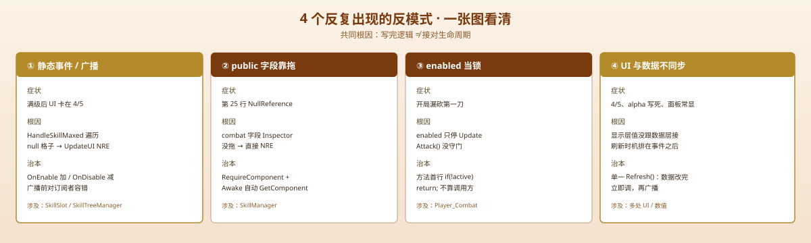

一句话说清这天的内容
Day 1–9 我们沿着「玩家能动 → 敌人会追 → 能砍能挨 → 有经验等级 → 有技能树」一条线把 ARPG 的雏形拼出来了。Day 10 上半场不写新功能，专门往后退一步：把这十天踩过的坑、做对的事、以及「如果重来会怎么搭」摊开来复盘一遍。
先说结论
这十天真正的收获不是「做了多少个系统」，而是 4 个反复出现的反模式——它们各自坑了我们至少一次，而且根因高度同源：我们一直假设「代码写完就能跑」，但 Unity 里大量崩溃只在「第一次真正被触发」时才暴露。复盘的目的就是把这 4 个模式钉死，让 Day 11 之后的代码从第一行就避开它们。
一、这十天造出来了什么
按真实脚本归一下类（共 17 个 .cs）：
| 阶段 | 系统 | 关键脚本 | 一句话 |
|---|---|---|---|
| Day 1 | 玩家移动 / 朝向 / 击退 | PlayerMovement | 输入 → 速度；Knockback() 受击退 |
| Day 2 | 高低地形遮挡 | Elevation_Entry / Elevation_Exit | 触发器切换 collider + sortingOrder |
| Day 3 | 敌人状态机 | Enemy_Movement / Enemy_Knockback | Idle / Chasing / Attacking / knockback |
| Day 4 | 敌人攻击 | Enemy_Combat | 重叠圆检测 + ChangeHealth(-damage) |
| Day 5 | 玩家战斗 | Player_Combat | Attack() → 动画事件 → DealDamage() |
| Day 6 | 属性 / 血量 / 面板 | StatsManger(单例) / PlayerHealth / StatsUI | 单例存档，UI 开关 |
| Day 7 | 经验 / 升级 | ExpManager / Enemy_Health | 杀怪 → 经验 → 升级（静态事件） |
| Day 8 | 技能面板 UI | ToggleSkillTree | 24 空格子 + Time.timeScale 暂停 |
| Day 9 | 技能系统接通 | SkillSO / SkillSlot / SkillTreeManager / SkillManager | 点格子 → 扣点 → 升级 → 真改游戏 |
提示
这张表本身就是一个「进度账本」：功能在累加，但每一行背后都站着至少一个当时没暴露、后来才炸的坑。下面把它们揪出来。
二、反复出现的 4 个反模式

反模式 1：静态事件 / 单例「忘了退订 + 广播打到未初始化对象」
静态事件（SkillSlot.OnAbilityPointSpent、OnSkillMaxed、ExpManager.OnLevelUp、Enemy_Health.OnMonsterDefeated）让任意监听者解耦订阅，但代价是广播范围 = 全场景，且必须手动 -=。
- Day 9 坑 1：
HandleSkillMaxed遍历 24 格，碰到skillSO为 null 的格子，UpdateUI()直接 NRE，异常冒泡把本该刷新自己的最后一步一起吞了。 - 本质：只要订阅链里有任意一个对象没初始化，整条广播就崩。
反模式 2：public 字段靠 Inspector 手动拖拽赋值
SkillManager.combat、PlayerMovement.player_Combat 这种「公开引用，靠拖」的字段，漏拖一个就是运行时 NRE。
- Day 9 坑 2：
SkillManager.combat没挂 → 点「Sword Slash」时combat.enabled = true第 25 行炸。 - 对照：
Enemy_*系列在Start()里GetComponent自取，反而从没出过这种错。
反模式 3：把 enabled = false 当「锁」用
Player_Combat 开局 enabled = false，但 Attack() 是 public 方法，enabled 只停 Update、不挡方法调用，Attack() 内部又没 enabled 守卫 → 第一刀在 timer 还是 0 时漏出去。
- Day 9 坑 3：开局没点技能也能砍第一刀；靠输入处
&& player_Combat.enabled == true才兜住。
反模式 4：UI 显示与数据不同步（刷新时机错）
- 满级卡 4/5：数据
currentLevel=5，UI 停在 4/5——因为UpdateUI()排在事件广播之后，被下游异常吞掉。 - 更普遍：
StatsCanvas.alpha硬编码 1、技能面板常显、availablePoints硬编码 10、升级没真给点数——显示层很多值还是写死的，没跟数据层接上。
技巧
4 个反模式其实是一个根因的两面：「写完逻辑」≠「接对生命周期」。静态事件要退订、跨物体引用要自动取、禁用要真锁、UI 要跟着数据刷。把这四条写进 Day 11 的编码清单，比再学一个设计模式都值钱。
三、我们做对了什么（也记一笔）
别只记坑。这十天有几件做得对、值得延续：
- 数据用 ScriptableObject，逻辑用 MonoBehaviour 分开（
SkillSO只描述技能，加技能 = 新建资产 + 拖格子，不用改脚本）。 - 单例
StatsManger.Instance统一存属性，所有脚本一处读、一处改。 - 事件订阅在
OnEnable加、OnDisable减，成对出现——Day 9 的SkillTreeManager这版两个-=都在，是 Day 8 踩过OnDisable写+=之后修回来的，这个纪律要守住。 - 先画 UI 再接逻辑（
ToggleSkillTreeDay 8 就位，Day 9 才接数据），让「看到东西」和「跑通逻辑」两件事分开验证。
四、如果重来，三天能抄完的骨架
把 4 个反模式一次性焊死，新代码从第一行就合规：
// 1) 静态事件包一层安全广播：任一订阅者为 null 也不崩
public static event Action<SkillSlot> OnAbilityPointSpent;
public static void RaisePointSpent(SkillSlot s) =>
OnAbilityPointSpent?.Invoke(s); // Unity 事件本身已对 null 订阅者容错
// 2) 跨物体引用自动取，不靠拖
[RequireComponent(typeof(Player_Combat))]
public class SkillManager : MonoBehaviour {
private Player_Combat combat;
void Awake() => combat = GetComponent<Player_Combat>();
}
// 3) 禁用类需求在方法内部守门，不依赖调用方
public void Attack() {
if (!isActiveAndEnabled || timer > 0) return;
// ...
}
// 4) UI 走单一 Refresh()，数据改完立即调，不依赖事件顺序
currentLevel++;
Refresh(); // 先刷新自己
OnAbilityPointSpent?.Invoke(this); // 再广播五、踩坑量化（已知）
| 反模式 | 已知踩中次数 | 涉及脚本 |
|---|---|---|
| 静态事件 / 广播打到未初始化 | 1（满级 4/5 崩溃） | SkillSlot / SkillTreeManager |
| public 字段漏拖 | 1（combat NRE） | SkillManager |
| enabled 当锁 | 1（漏第一刀） | Player_Combat / PlayerMovement |
| UI 与数据不同步 | 4+（4/5、alpha 硬编码、面板常显、点数硬编码） | 多处 UI / 数值 |
数字不大，但每一个都要靠「跑到真实路径」才暴露——这正是它们最贵的地方。
一句话总结
十天我们拼出了 ARPG 雏形（17 个脚本、4 大类系统），但真正值得带走的不是功能清单，而是 4 个同源反模式——静态事件忘了退订 / 广播打到未初始化对象、public 字段靠 Inspector 漏拖、enabled 当锁用、UI 与数据不同步——它们的共同根因是「写完逻辑 ≠ 接对生命周期」，把「事件成对退订、引用自动取、禁用真锁、UI 跟着数据刷」写进 Day 11 的编码清单，比再学一个设计模式都值钱。